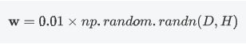

参数初始化
目的：让深度学习模型在训练过程中梯度不为零，可能会加快梯度下降的收敛速度，降低训练错误的概率。
为了达到这个目的，初始化需要满足的条件：
- 各层的激活值不会出现饱和迹象。（当输入过大或过小，激活函数的导数几乎为零，即梯度基本为0，称为饱和）
- 各层的激活值不为0.
- 尽量使各个层的激活值的方差保持一致。
- 尽量使各个层对 状态的梯度 的方差保持一致
几种初始化方式
- 预训练模型
- 随机初始化：使权重分布符合正态分布，在训练深度神经网络时可能会造成梯度消失或者梯度爆炸（网络层数太深，梯度容易一直变大或者一直变小）
- xavier初始化：基本思想事保持输入和输出的方差的一致，避免了所有的输出值都趋向于0；
- kaiming初始化：何恺明提出的一种针对Relu的初始化方法，思想是在Relu网络中，假设有一半的神经元被激活,另一半为0。保持方差不变，只需要在xavier基础上除以2即可。
为什么不能全0初始化
如果权重是0，那么中间层的输出是输入数据乘权重，就也是0且相等。神经网络计算出来的输出值是一样的，那么神经网络反向传播算法计算出来的梯度也是一样，参数更新值也一样。所以不管再训练多少次，这些隐藏层梯度都是一样，和线性模型就没有区别了。
全部初始化为一样的值
和上述一样，最后输出对于每一个参数反向传播的梯度都一样，相当于一个线性模型
初始化为小的随机数
是打破网络对称性的一个普遍的解决办法。神经元一开始的权重值是随机的，所以梯度反向传播时会有不同的更新。看起来初始化的值类似于

0.01会试w变小，w很大时会导致神经元输出很大，再通过激活函数后容易梯度消失，饱和。当然如果太小，输出接近激活函数在负方向接近饱和，也容易梯度消失。
预训练
只谈finetune策略
- 把预训练模型当做权重初始化权重，对整个网络进行完全训练，精度比2高很多。
- 训练一些层而冻结其他层，一般较低层学习的是通用特征，较高层适用的是逻辑含义更复杂的抽象特征。如果模型很大，数据集不大，会冻结更多层以免过拟合。如果数据很多，模型不大，就可以训练更多层。一般只训练最后的分类层
- 冻结卷积块，即卷积层，池化层等堆积的一个卷积模块。这种情况适用于训练、冻结平衡的极端情况。
为什么深度学习模型难训练
1.梯度消失
梯度反向传播的过程中越来越小，前面层比后面层学的慢，所以学习会卡住。反向传播过程中前面的层的梯度收到后面所有层的影响，如果梯度值很小，更新信息在传播中指数形式衰减，发生梯度消失。
可能会由：
学习率大小，网络初始化参数，激活函数的边缘效应（饱和）
2.梯度爆炸
梯度也可能在传播中指数增大，导致权重大幅度更新，甚至溢出，变成NaN值，无法更新
3.权重矩阵退化导致模型的有效自由度变小。